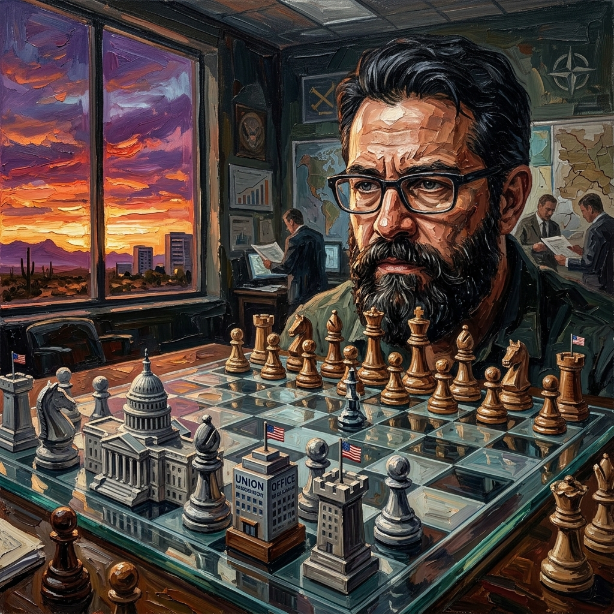
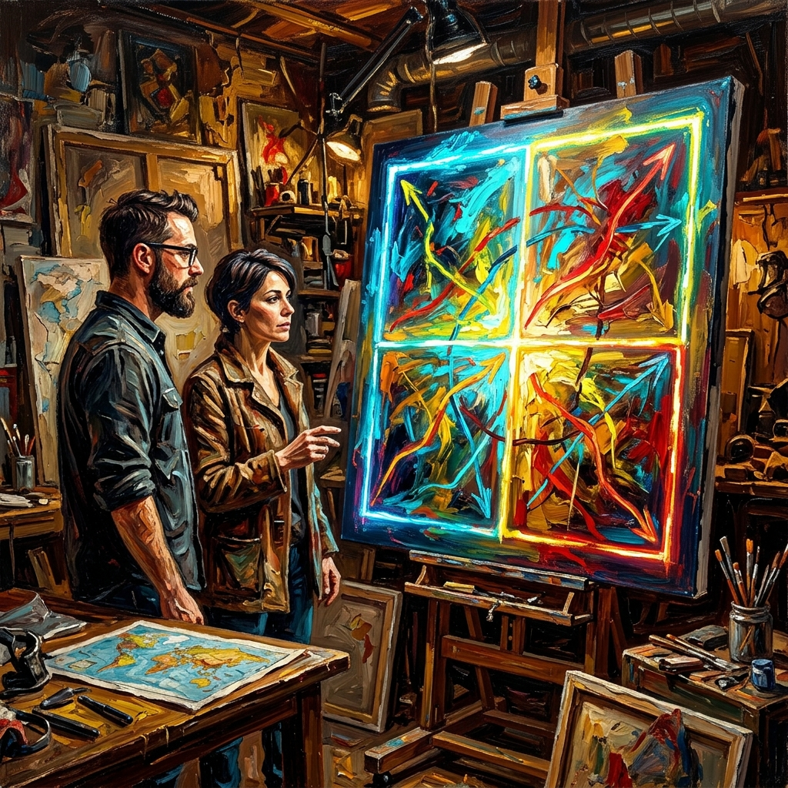
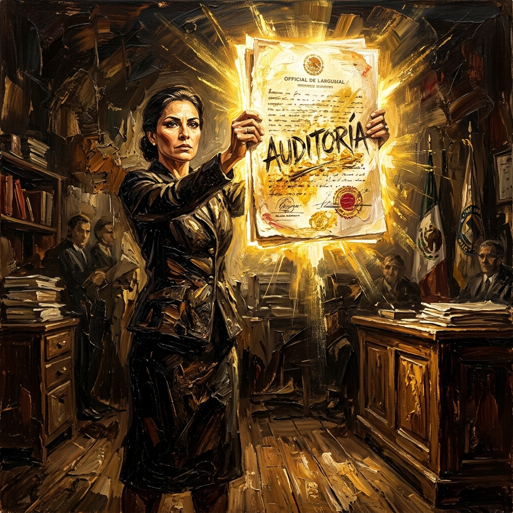
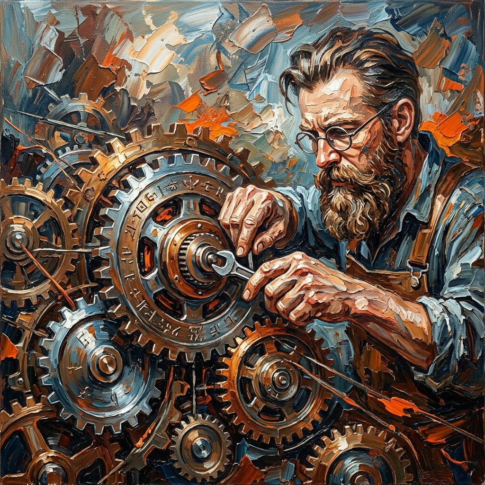

La Alquimia de la Decisión
"La incertidumbre es el arma de los justos."
Bienvenido al nivel estratégico definitivo. Tras la convergencia, llega el turno de la ingeniería táctica. En este tomo, el Magisterio Sonorense utiliza la Teoría de Juegos y la ciencia actuarial para desmantelar las Fábricas de Ignorancia. Ya no somos peones; somos los arquitectos de un nuevo equilibrio.

El Tablero de Cristal
"Lo que vemos no es desorden, es un equilibrio de miedo."
Kristian revela que la parálisis de la Sección 28 es un Equilibrio de Nash perfecto. El sistema nos ha convencido de que movernos es peligroso. Pero el tablero es de cristal: transparente para quienes saben leer la estrategia y frágil ante la verdad colectiva.
Fábricas de Opacidad
"Tu ignorancia es el dividendo de su control."
La agnotología aplicada al FASM28. Paloma descubre que la falta de transparencia no es un descuido, sino un diseño para ocultar el saqueo del ahorro mutualista. Aprender a leer sus trampas es el primer paso para recuperar nuestro patrimonio.
El Oráculo Actuarial
"Contra la ciencia actuarial no tienen defensa."
La verdad sobre la PIP (Pensión Intergeneracional Protegida). A través de un estudio profesional, demostramos que la justicia es matemáticamente posible. El presupuesto existe; lo que falta es honestidad en la cúpula.
La Paradoja de Jiang
"La alfabetización estratégica es el hackeo definitivo."
El Profesor Jiang advierte que el sistema educa para la sumisión. Romper la "Baja Alfabetización Táctica" nos permite entender los incentivos del poder y dejar de ser víctimas de su narrativa oficial.
El Dilema de la Base
"La unión no es un sentimiento, es una estrategia."
Coordinación vs Traición. Analizamos el Dilema del Prisionero en las bases de Sonora. Solo la coordinación técnica y la lealtad inquebrantable pueden romper el ciclo de derrotas individuales.

Soluciones Mixtas I
"La incertidumbre calculada es nuestro escudo."
Introducción al Factor X. Al ser impredecibles en nuestras tácticas (legal, social, técnica), le quitamos la iniciativa al adversario. Quien domina la incertidumbre, domina el tablero.

La Auditoría del Honor
"La luz de la verdad entrará hasta los rincones más oscuros."
No pedimos transparencia, la imponemos. La auditoría externa al FASM28 es una demanda de honor. Paloma lidera la exigencia técnica para limpiar las cuentas de la Sección 28.

Ingeniería de Incentivos
"No cambiamos personas, cambiamos las reglas."
Ajustamos los engranajes del sistema para que a los líderes les salga más caro traicionar a la base que apoyarla. Es la reingeniería del poder magisterial en su fase más avanzada.
El Arsenal de la Verdad
"La frontera de la dignidad la ponemos nosotros."
Desde Nogales, presentamos la evidencia definitiva. Quinquenios y PIP unidos en un cuerpo de prueba técnica irrebatible. El Magisterio Sonorense está listo para cobrar lo que le pertenece.
Jaque Mate al 1 de Mayo
"Hoy no solo marchamos, hoy tomamos el tablero."
La victoria de la inteligencia colectiva en Hermosillo. La movilización masiva del 1 de Mayo marca el fin del viejo equilibrio y el nacimiento de una soberanía docente real y técnica. ¡Fierro por la 300!
CERRAR TOMO XIII